← Back to Home
ULAB
Academic Projects
Media Studies & Journalism . Digital Film & Television Production
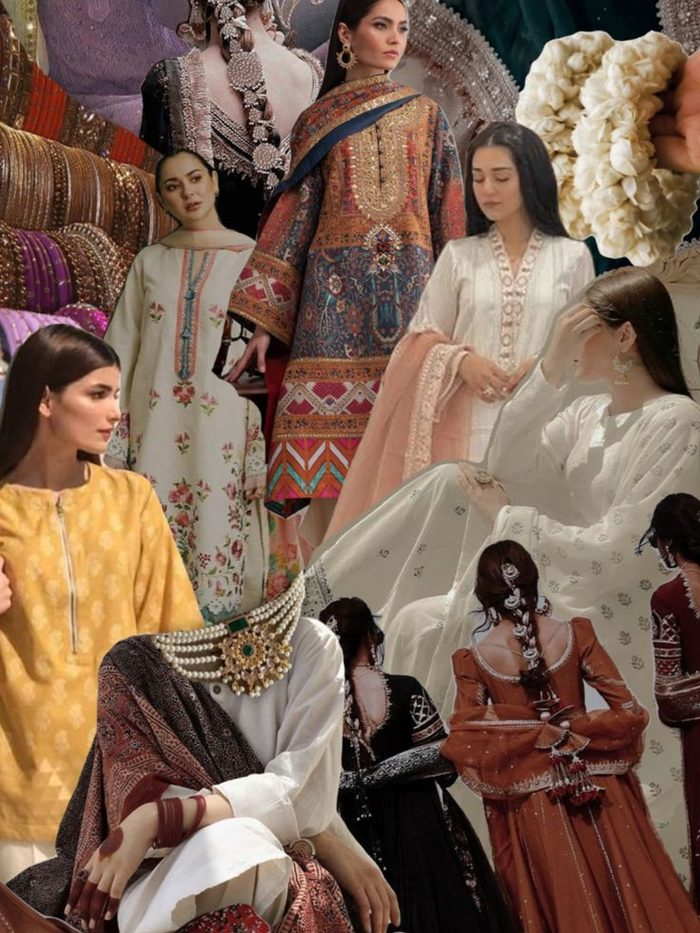
01
Research Proposal
Analysis of Fashion & Costume Trend of Bangladeshi Film (1940–2020)
MSJ1201 Communication Research · Summer 2022
View Project →
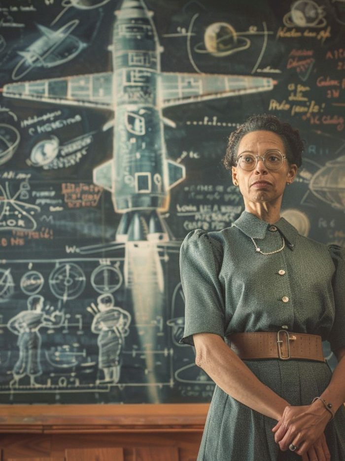
02
Blog Post
Mahjabin Haque: An Excellent Inspiration for Women Engineering
MSJ2101 Communication Technology · Fall 2022
View Project →
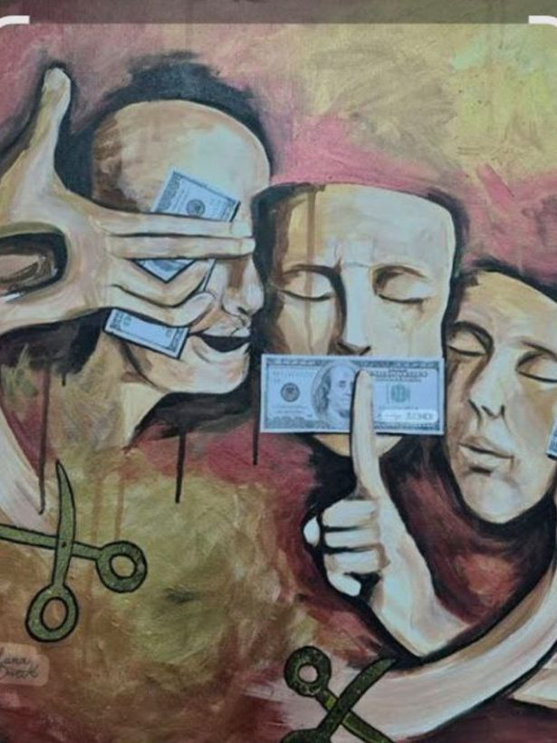
03
Mask Making · Visual Art
“Political Polarization: Threatening Social Cohesion and Undermining Democracy”
MSJ2201 Mass Communication · Summer 2023
View Project →
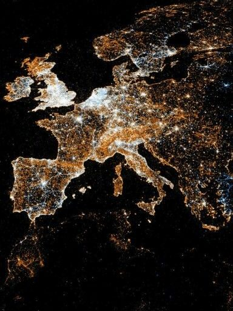
04
Feature Writing — English
The Dark Side of Light: How Bangladesh's Environment is Being Affected by Light Pollution
GEF1202 Advance English Writing · Spring 2023
View Project →
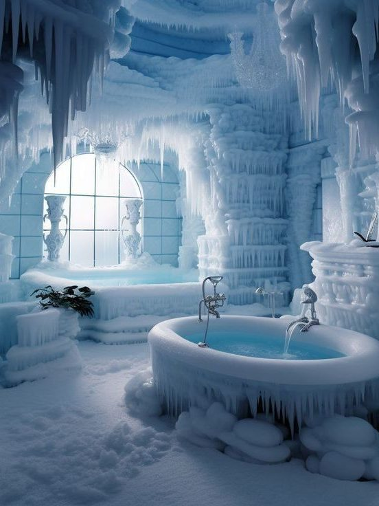
05
Feature Writing — Bangla
পৃথিবীর সবচেয়ে শীতলতম গ্রামে মানুষ গোসল করে কিভাবে?
GEF1203 Advance Bangla Writing · Fall 2022
View Project →
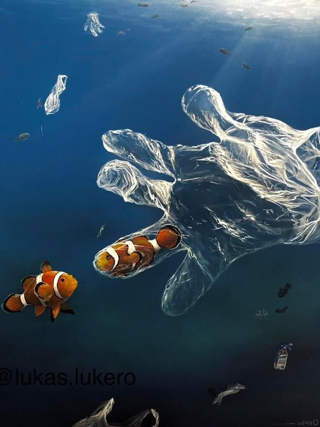
06
Trashion Show · Group
And Thus, Princess Ariel Has Nowhere to Stay…
MSJ2102 Convergence Communication I · Spring 2023
View Project →
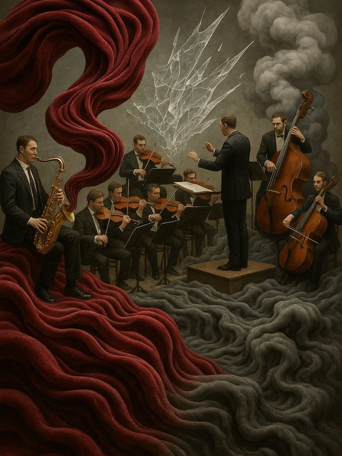
▶
07
Video Art
▶ The Symphonic Cacophony
MSJ2202 Convergence Communication II · Spring 2024
View Project →
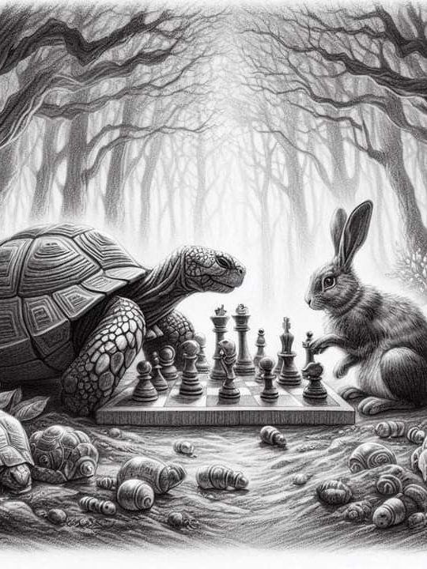
08
Installation Art
A Silent Crowd
MSJ2231 Visual Communication · Summer 2024
View Project →
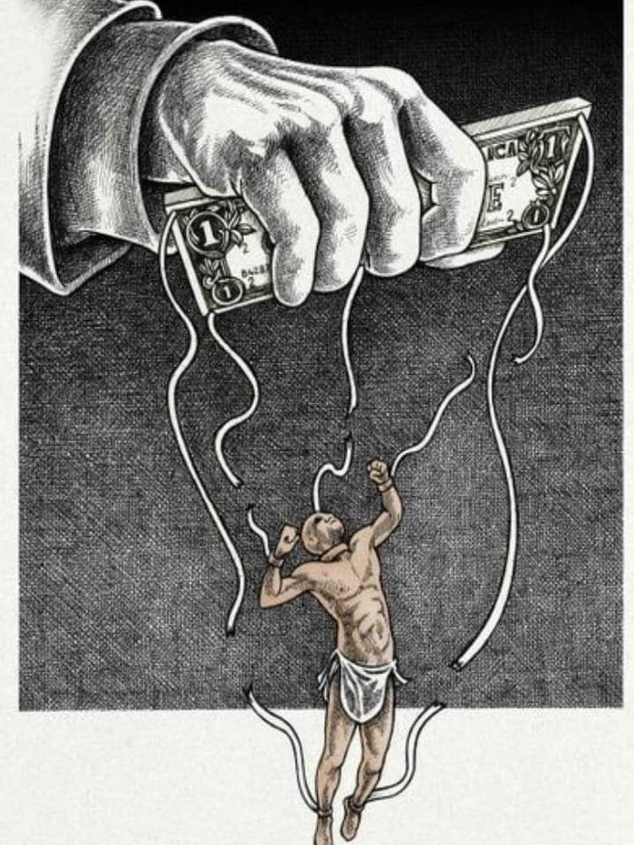
09
Stage Drama · Acting
চাঁদের হাসি ক্লিনিক
MSJ3131 Media Presentation and Performance · Fall 2024
View Project →
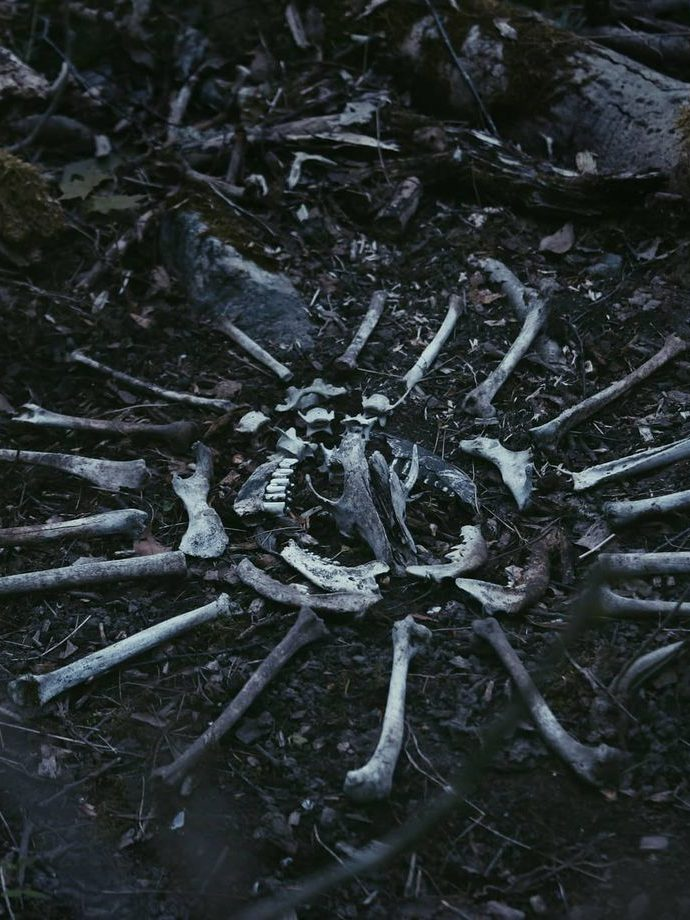
10
Script Writing
Collector by the Lake
MSJ3132 Writing for Film and Television · Fall 2024
View Project →
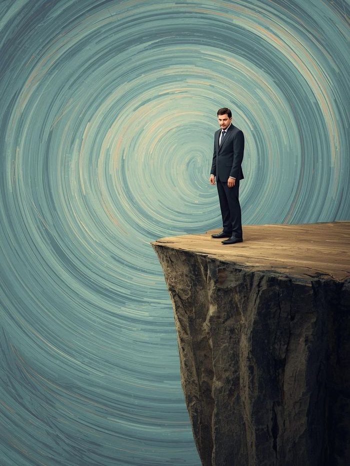
▶
11
Music Video · Cinematography
▶ Helden — David Bowie
MSJ3231 Digital Cinematography · Spring 2026
View Project →
▶
12
TV Infotainment
▶ দ্য যমজমাট Show
MSJ3233 TV Infotainment Production · Fall 2025
View Project →
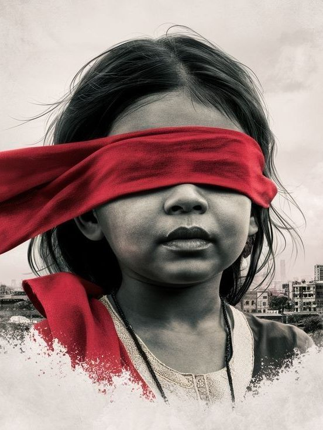
▶
13
Documentary
আহত পাখি
MSJ4131 Documentary Production · Summer 2025
View Project →